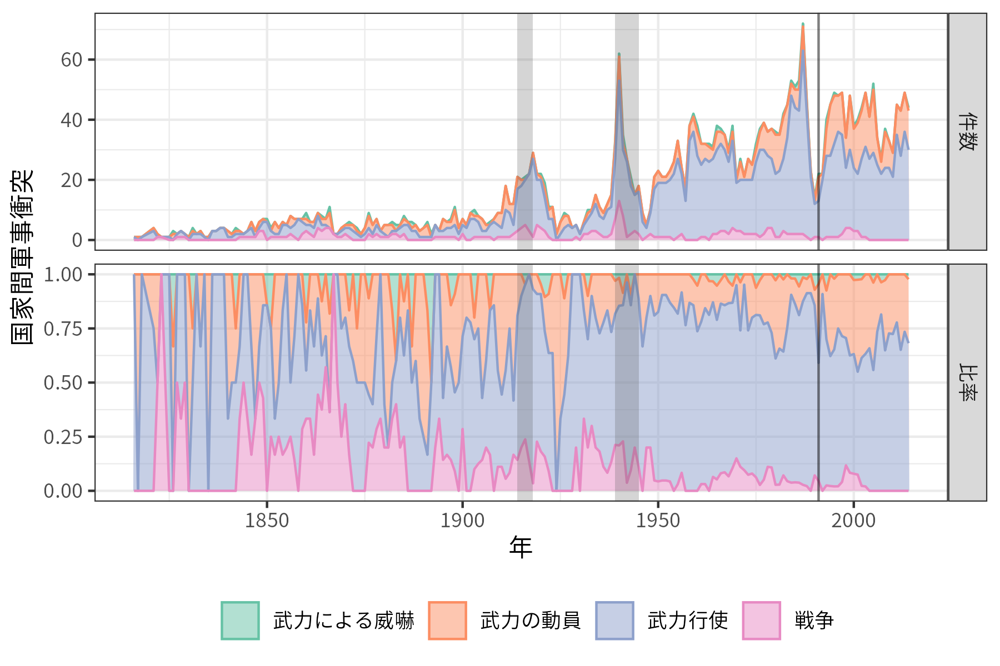
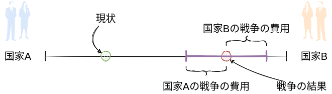

5 戦争の原因
- 現代の武力紛争の特徴はなにか？
- 戦争と外交はどのような関係にあるのか？
- なぜ戦争は選択されるのか？
課題文献
- 戦争のデータ
- 多湖 (2020, 序章)
- 抑止と安心供与
- 中西, 石田, と 田所 (2013, 第3章)
- 戦争の交渉モデル
- Blattman (2023)
- 多湖 (2020, 第2章)
- 砂原, 稗田, と 多湖 (2020, 第10章)
- 坂本 と 石橋 (2020, 第2章)
- 大芝 ほか (2018, 第4章)
- 浅古 (2018, 第11章)
- 岡田 (2020, 第6章)
- 石黒 (2019, 第1章)
5.1 戦争の傾向
武力紛争を定義し、データセットを構築
Uppsala Conflict Data Program (UCDP)の武力紛争
UCDP defines state-based armed conflict as: “a contested incompatibility that concerns government and/or territory where the use of armed force between two parties, of which at least one is the government of a state, results in at least 25 battle-related deaths in a calendar year.”
Correlates of War (COW) の国家間軍事衝突(Palmer ほか 2022)
- No militarized action
- Threat to use force
- Display use of force
- Use of force, War


5.2 戦争の構造
戦争の原因？
- 人間の本性
- 循環論法、後知恵
- アナーキー
- 犯罪、内戦
- 政治的統合？
地域的・時間的な分散／非現実的な安全保障政策
- 戦争\(\neq\)自然災害／戦争\(=\)人々（集団）の選択
様々な戦争（が生じる状況）に共通する構造？
- あらゆる戦争はあらゆる側面で異なる
- 抽象化、モデル化
5.2.1 政治の手段としての戦争
カール・フォン・クラウゼヴィッツ（「戦争論」）の戦争の定義(Clausewitz 2020)
戦争とは他の⼿段をもってする政治の継続である。
戦争とは、敵を強制してわれわれの意志を遂⾏させるために⽤いられる暴⼒⾏為である。
- 戦争\(\neq\)目的／戦争\(=\)手段
\(\leadsto\)「なぜ戦争が起こるのか」＝「なぜ外交が失敗したのか」(Fearon 1995)
5.2.2 利害の対立
複数の国＆利害対立\(\leadsto\)政治
- 国益 (national interest)：安全保障、国力、経済的富、領土、政策（政府）
- 現状変更勢力 (revisionist power)／現状維持勢力 (status quo power)

対立の理由／戦争の原因
5.2.3 戦争の被害
5.2.4 国際危機と戦争

- 国家\(A\)と国家\(B\)は価値のあるもの（例えば領土）をそれぞれ\(q\)と\(1-q\)と分け合っている。
- 国家\(A\)が\(B\)を攻撃し、\(B\)が降伏すれば、価値あるものの一部を明け渡す。
- 国家\(A\)は\(x\)を所有する（国家\(B\)は\(1-x\)だけ手にする）。
- 国家\(A\)が攻撃して、国家\(B\)が反撃をした場合、戦争が起こる。
- 戦争の結果国家\(A\)と\(B\)はそれぞれ\(w\)と\(1-w\)を獲得する。
- 戦争の費用としてそれぞれ\(c_A\)と\(c_B\)だけ失う。
- 展開型ゲーム (extensive-form game)／後ろ向き帰納法 (backward induction)
5.2.5 抑止
抑止 (deterrence) ：実行したいこと（この場合、攻撃）を自制させる
5.2.5.1 抑止の破綻・戦争の回避
- \(B\)：戦争より譲歩 (\(1-x > 1-w-c_B\))
- 例：\(q = 0.2, x = 0.8, w = 0.5, c_B = 0.4\)
5.2.5.2 抑止の成功
- \(B\)：譲歩より戦争 (\(1-x < 1-w-c_B\))
- \(A\)：戦争より平和 (\(q > w - c_A\))
- 例：\(q = 0.2, x = 0.8, w = 0.5, c_A = 0.4, c_B = 0.2\)
5.2.5.3 抑止の破綻・戦争
- \(B\)：譲歩より戦争 (\(1-x < 1-w-c_B\))
- \(A\)：平和より戦争 (\(q < w - c_A\))
- 例：\(q = 0.2, x = 0.8, w = 0.5, c_A = 0.2, c_B = 0.2\)
5.2.5.4 抑止の条件

- 国家\(B\)の反撃の意思 (\(w < x - c_B\))
- 国家\(A\)の戦争回避の意思 (\(w < q + c_A\))
- 戦争で有利な結果を得られる国力（\(w\)は国家Aの強さとみなせる）
- 戦争で受ける被害・受忍限度（意思の強さ）
5.2.6 交渉
基本的に、戦争に費用がある限り、互いに戦争よりも好ましい交渉結果を得ることができる。


- \(A\)が戦争よりも交渉を好む (\(x > w - c_A\))
- \(B\)が戦争よりも交渉を好む (\(1- x > 1-w - c_B\))
\[ w - c_A < x < w + c_B \]
- 非効率性パズル
- 外部機会 (outside option) \(\leadsto\)交渉ポジション（有利さ）
抑止＆交渉\(\leadsto\)アナーキーにおける平和
- 抑止と交渉の二分法
- 平和／正義
5.3 戦争の原因
そうであるにもかかわらず戦争が選択されるのはなぜか？(Fearon 1995)
- 情報の非対称性
- コミットメント問題
- 分割不可能性・リスク愛好的
5.3.1 情報の非対称性
情報の非対称性 (asymmetric information)
- 本当に国家\(B\)は反撃する気があるのか？
国家\(A\)が抑止の信憑性 (credibility) が低いと誤認 (misperception)\(\leadsto\)抑止や交渉の失敗\(\leadsto\)戦争
5.3.1.1 チープトーク
チープ・トーク、ブラフ
- 異なるタイプ\(\leadsto\)異なるメッセージ\(\leadsto\)情報伝達
コストリー・シグナル
5.3.1.2 朝鮮戦争
アチソン・ライン（1950年）

{kind=link}
- 誤った情報伝達
北朝鮮が韓国に侵攻（朝鮮戦争）\(\leadsto\) アメリカが参戦、「北進統一」を目指す\(\leadsto\)中国義勇兵の参戦
- 中国による威嚇
5.3.1.3 干ばつと紛争
干ばつ\(\leadsto\)農作物の減少・経済水準の低下\(\leadsto\)戦争の費用の低下\(\leadsto\)誤認の確率の上昇？

- 相関\(\neq\)因果
- 第三の要因（交絡因子）
5.3.2 コミットメント問題
コミットメント問題 (commitment problem)
5.3.2.1 安心供与
第一撃における優位 (first-strike advantage) ／先制攻撃 (preemptive attack)(Powell 2006)
- 攻撃・防御バランス

戦争の結果
- 互いに攻撃する戦争の場合\(w\)
- 国家\(A\)に有利な戦争の場合\(w^A\)
- 国家\(B\)に有利な戦争の場合\(w^B\)
安心供与 (reassurance) の破綻
- \(B\)：平和より一方的な攻撃\(1-q < 1-w^B - c_B\)
- \(B\)：一方的に攻撃されるより戦争\(1-w^A-c_B < 1-w-c_B\)
- \(A\)：一方的に攻撃されるより戦争\(w^B-c_A < w-c_A\)
- 例：\(q = 0.5, w^A = 0.8, w = 0.5, w^B = 0.2, c_A = c_B = 0.2\)
\(\leadsto\)抑止＆安心供与
5.3.2.2 太平洋戦争
予防戦争 (preventive war)
- 大日本帝国は日中戦争で消耗\(\leadsto\)資源を求めて東南アジアに進出\(\leadsto\)アメリカなどから経済制裁
- アメリカは当時、日本にとって石油輸出国
5.3.3 分割不可能性・リスク愛好的
財が分割不可能 (all or nothing)
- 本当に分割不可能？
- サイドペイメント
リスク愛好的
- 確実に得られる1万円 or 50%で2万円もらえるが50%でなにももらえない
5.4 戦争の終結
戦争の終結\(=\)外交の成功\(=\)外交の阻害要因の消滅(Reiter 2010)
- 情報の非対称性／コミットメント問題の戦闘を通じた解決
- コミットメントとしての和平協定